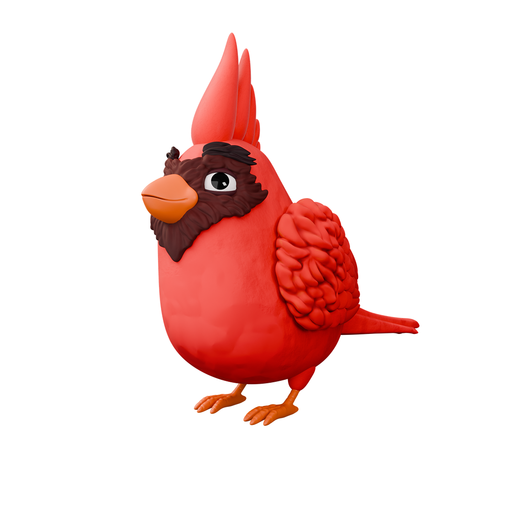
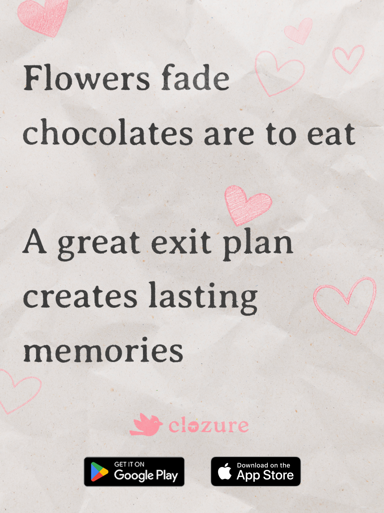

Clozure
Overview
Clozure is a legacy-planning app that helps people organize their end-of-life wishes and create lasting memories for the ones they love.
As Design & Brand Strategy Associate at Clozure, Inc., I lead design and brand work across the product — building the end-to-end design system, designing the website and app experience, producing video and social content, and shaping brand positioning and go-to-market strategy.
Meet Coda
Coda is Clozure's mascot — a friendly cardinal who guides users through a topic most people avoid. The character softens a heavy subject and gives the brand a warm, approachable voice across the app, social media, and marketing.



Colors
A calm, grounded palette — warm ivory and evergreen for trust, burgundy for action, and cardinal red reserved for Coda.
Background
Warm Ivory
#F4EFEAPrimary Text
Evergreen
#1F3D36Body Text
Charcoal
#2B2E34Primary CTA
Burgundy
#7A2E3ASecondary CTA
Sky Blue
#6F8FAFCoda Accent
Cardinal Red
#C43A31Social Media
Campaign content for Instagram, including holiday posts and educational carousels that introduce legacy planning in an approachable way.

"Why You Need Clozure" carousel


"Your Legacy Pit Crew" carousel


Wefunder Pitch Video
Produced and edited the investor-facing pitch video for Clozure's Wefunder campaign.
Brand Bible
The full brand guidelines — logo usage, typography, color, voice, and Coda's character rules — are documented in the Clozure Brand Bible.
View Brand Bible